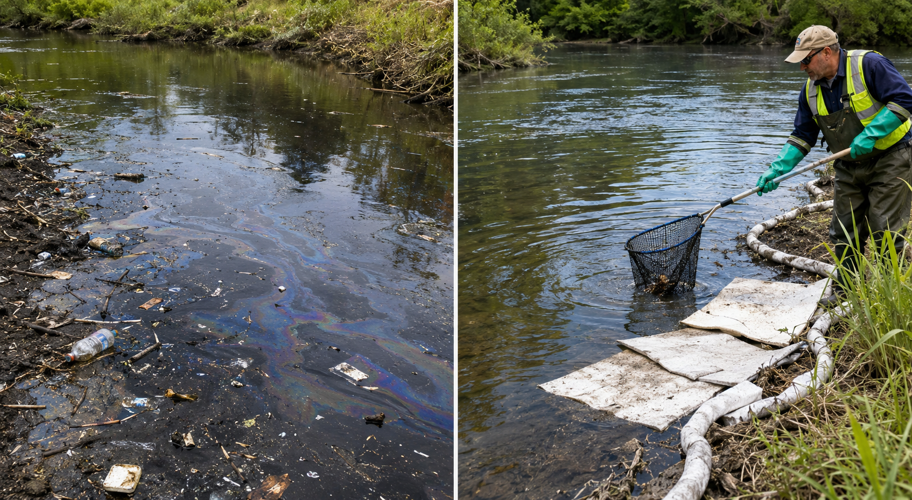
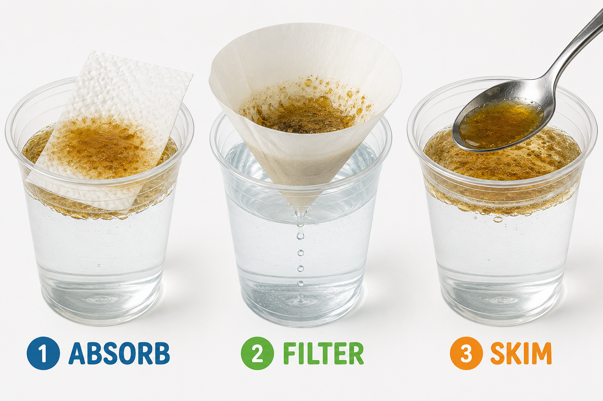

🧪 · Lesson 23.02
0%

Optima Academy Online
An Education Experience Company
Investigation: Pollution Cleanup Simulation
🌿
Lesson 23.02
Hold this question in your mind as you work through the lesson. By the end, you should be able to answer it with evidence!
Start here. Learn the words you will use today.
Look at the two images below. One shows a polluted waterway — dark and cloudy. The other shows cleanup workers at the water's edge. What do you notice? What are you wondering?

There are no wrong observations. Scientists always start by looking carefully and asking questions. We'll return to your questions at the end of the lesson.
Before we begin, let's learn the words scientists use when they study this topic. Tap each card to flip it and read the definition. You'll see these words throughout the lesson!
Copy this sentence carefully into your science notebook:
"Scientists test different cleanup methods to find out which solution works best before using it in the real world."
Now learn the main science idea.
PollutionPollutionSomething harmful added to air, water, or land that doesn't belong there. can enter rivers, lakes, and wetlands in many ways — oil spills, trash runoff, and chemicals from farms are a few. Once it mixes in, the water becomes contaminatedContaminationWhen a harmful substance mixes into something clean and makes it unsafe.. Animals that drink or live in contaminated water get sick. Plants can die. Whole ecosystems can change.
National parks like Everglades National Park depend on clean water to survive. When pollution enters a park's waterways, rangers and scientists work fast to reduce the damage.
Scientists and engineers test different cleanup methodsCleanup MethodA specific way of removing or reducing pollution from an area. to find out which works best. Here are three common approaches:
Not every cleanup method works the same way. Some remove particles but not dissolved chemicals. Others absorb oil but leave tiny droplets behind. Engineers compare results — looking for the most effectiveEffectivenessHow well something works at solving the problem it was designed to fix. solution for that specific type of pollution.
Real-World Connection: After oil spills in the Gulf of Mexico, crews tested booms (floating barriers), skimmers, and absorbent pads side by side. They chose different tools for different parts of the spill — just like you will today.
Some cleanup methods remove more pollution than others. Engineers compare results carefully to find the most effective solution before using it in a real situation.
Cause and effect: the type of pollution and the cleanup method you choose directly affect how much pollution gets removed.
Some pollutants are harder to remove than others. Oil floats on water because it's less dense — that's why skimming and absorbing work well for oil spills. But chemicals that dissolve in water, like some fertilizers, are invisible and much harder to filter out with simple materials. Scientists are working on special filters made of tiny particles called nanoparticles that can grab dissolved chemicals at the molecular level.
One fascinating approach is called bioremediation — using living organisms to clean up pollution. Certain bacteria actually eat oil. After the Gulf spill, scientists studied whether naturally occurring oil-eating bacteria could help speed up the cleanup. Nature had its own cleanup crew.
Think about this: what's the difference between removing pollution and preventing it in the first place? Which do you think would be more effective — and why?
Now test the idea yourself.
You'll need: 3 small clear cups, water, 2–3 teaspoons of cooking oil, a piece of paper towel, a small coffee filter (or a second paper towel folded into a cone), a spoon, and a timer. Set everything out before you begin.
Follow each step carefully. After each test, record what you observed in your science notebook before moving on.
| Cleanup Method | What I Did | What I Observed | Effectiveness (1=low · 3=high) |
|---|---|---|---|
| 🧻 Absorb | |||
| 🔽 Filter | |||
| 🥄 Skim |
Set up your polluted water. Fill each of your 3 cups about halfway with water. Add 1 teaspoon of cooking oil to each one. Stir gently. Notice the oil — does it mix in, or does it stay on top? Write one observation before you start testing.
Test Method 1 — Absorb. Lay a piece of paper towel flat on the surface of Cup 1. Hold it there for 30 seconds, then carefully lift it out. Look at the towel and the water. How much oil came off? Rate this method 1 (low), 2 (medium), or 3 (high) in your chart.
Test Method 2 — Filter. Fold your coffee filter or paper towel into a cone shape. Hold it over a clean cup and slowly pour Cup 2 through it. Look at what collects in the filter and what the water looks like now. Rate this method in your chart.
Test Method 3 — Skim. Use your spoon to carefully scoop floating oil off the surface of Cup 3. Try for 60 seconds. Look at what you collected and how the water looks now. Rate this method in your chart, then circle the method with the highest rating — that's your most effective method.
Compare your results. Look at your chart. Which method got the highest effectiveness rating? Write one sentence in your notebook: "The most effective cleanup method was ___ because ___."

Think about what you found. Being specific matters — a good scientist thinks carefully about exactly what they saw, not just "it worked" or "it didn't work."
Tell the story of your investigation from beginning to end — what you did, what you noticed, and what you figured out. Use your notes to help you.
Think through each question on your own. Write your answers in your science notebook before moving on.
Check what you understand.
Show what you learned.
🔍 Part A — Review & Rate
Look back at your simulation data chart. Use your observations to complete each task below in your science notebook.
🚀 Part B — Short Answer
Answer each question in complete sentences. Use your science vocabulary!
Think about what you observed in your simulation. Which cleanup method removed the most oil? What does your data tell you about why that method worked best? If you were an engineer helping to clean up a polluted lake in a national park, which method would you recommend — and why?
What do you think?
💡 Start with: "During my simulation, I noticed that…"
What did you observe or learn that supports your thinking?
💡 Start with: "This tells me that…" and then: "If I were an engineer, I would recommend…"
Why does that make sense?
💡 Start with: "This makes sense because…"
📚 Try to use at least one of these words in your answer: effectiveness, simulation, evidence, cleanup method
🎨 Part C — Draw & Label
Draw a before-and-after picture of a polluted lake being cleaned up using your most effective method. Show what the water looks like before cleanup and after. Label at least 4 parts — include the pollution, the cleanup tool, the clean water, and one animal or plant that would benefit from cleaner water.
Submit your work on Canvas using one of these options:
Make sure your submission includes all of these: